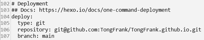
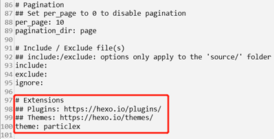

GitHub 提供了静态网页托管服务，我们可以把自己的静态网站页面部署到GitHub-Page上，更多有关GitHub-Page可以查看GitHub Pages文档，GitHub-Page上的网页可以纯手工制作HTML网页，也可以借助一些软件，例如Hexo，helo等，主要用于创建个人博客。本文根据我的个人博客创建经历，利用Hexo在GitHub-page上创建个人博客，记录一下关于个人博客创建方法。
引言
Hexo是一款基于Node.js的静态博客框架，依赖少易于安装使用，可以方便的生成静态网页托管在GitHub和Heroku上，是搭建博客的首选框架。可以将我们撰写的 Markdown 文档解析渲染成静态的 HTML 网页。
所以需要先安装好 Node.js。再使用Node.js 的包管理工具 npm下载hexo。
前期准备
注册GitHub账号
打开GitHub官网，点击右上角的注册（如已注册请忽略）
可以使用QQ邮箱，注册最后需要邮箱验证，如下所示邮件
软件安装
下载node.js
Windows系统下可直接到进入Node.js官网下载安装（我下载的安装版）。
选择长期维护版本，尝鲜版可能会有Bug，
一直点next就行，不用勾选其他选项，
安装好后打开终端分别输入：
node -v
npm -v
出现版本号说明node.js安装成功。
下载Hexo
使用 npm下载安装 Hexo：
npm install -g hexo-cli
可以输入：
hexo -v
查看是否安装成功，如出现下图结果说明安装成功。
下载git
打开git下载网址Git-Downloads，选择windows版本，下载完成后安装
一直点next
安装好后终端输入
git -v
出现版本号说明Git安装完成。
打开浏览器，登录GitHub账号，点击GitHub的头像选择New repository创建新仓库，仓库名称必须为：用户名. github.io，用户名为GitHub帐号名。
在网站部署完之后可用网址“http://用户名. github.io”访问你的静态页面。
创建Hexo本地运行环境
新建一个文件夹用来存放 Hexo 的程序文件，如“Blog”。打开创建的文件夹，右键用终端打开。
连接到GitHub
在终端输入
git config --global user.name # user.name 为"GitHub 用户名"
git config --global user.email # user.email 为"GitHub 邮箱"
创建 SSH 密匙：
在终端输入
ssh-keygen -t rsa -C "GitHub注册邮箱"
然后一直回车。
打开文件资源管理器，进入 C:\Users\用户名.ssh 文件夹（如果找不到，窗口考上三个小点旁篇找到查看-显示-隐藏的项目，勾选 “隐藏的项目”），用记事本打开id_rsa.pub（公钥）文件并复制里面的内容。
浏览器登陆 GitHub，点击头像，进入Settings页面，选择左边栏的 SSH and GPG keys，点击 New SSH key。取个任意名字，粘贴上一步id_rsa.pub 文件复制内容到Key 中，点击 Add SSH key 完成添加（此时应该会给你发一个邮件）。
验证GitHub连接：
在终端输入
ssh -T git@github.com
出现 “Are you sure you want to continue connecting (yes/no)?”，输入 yes 回车确认。
出现“Hi ”用户名“, You’ve successfully authenticated, but…” 说明连接成功。（下图来自网络，侵权请联系删除）
Hexo与GitHub关联
记事本打开配置文件_config.yml，翻到最后修改为，找到如下图文字，更改方式如下。
deploy:
type: git
repository: 这里填入你之前在GitHub上创建仓库的完整路径 + .git
branch: 主分支名#（我的是main）
具体可参考下图：
Hexo建立网站
初始化Hexo
刚刚创建好的文件夹“Blog“里打开终端输入：
Hexo initial
此时将出现如下图文件
生成网页
输入：
Hexo g #即hexo generate
会生成Hexo的默认主题网页文件
启动hexo服务(预览网页)
输入
Hexo s #即hexo server
根据终端提示，可在浏览器输入网址“http://localhost:4000”访问，预览生成的网页。
部署网页到服务器
输入：
Hexo d #即hexo deploy
在浏览器打开网址：http://“用户名”. github.io就可以看到你刚刚部署的网页。
更换主题
进入Hexo官网，打开主题网页，找到好看的主题可点击预览图下方的主题名前往GitHub下载主题文件，或者直接git clone 到themes文件夹。例如我选择的主题为ParticleX
可在终端输入：
cd themes #更改目录
git clone https://github.com/argvchs/hexo-theme-particlex.git #克隆文件到本地（文件夹名可另改为particlex）
主题更改
记事本打开 “_config.yml” 找到theme，在冒号后更改为你想要应用的主题名。
主题修改
可以参考主题作者的文档
撰写与发布博文
撰写博文
使用命令
Hexo new “post-name”# post-name为你发布博客的名称
将会在你 ./sourse/_post 文件夹里新建一个 post-name.md的文件，根据markdown的语法规则把你想写的内容写到这个文档。可使用Markdown编辑器编辑（vsCode也可以使用）。
如果不想使用命令，也可以直接在_post文件夹新建一个 .md的文档，注意添加Front-matter，格式如下：
---
title: Hello World #标题
date: 2013/7/13 20:46:25 #默认添加，可不写
categories: Diary #两个或以上可以用中括号，例如：[Diary, Games]
tags: Games #两个或以上可以用中括号，例如：[Diary, Games]
---
发布博文
先使用命令：
hexo g
生成网页文件
再输入：
hexo s
打开浏览器，输入预览网址，预览一下排版如果没问题，使用：
hexo d
部署到网站。